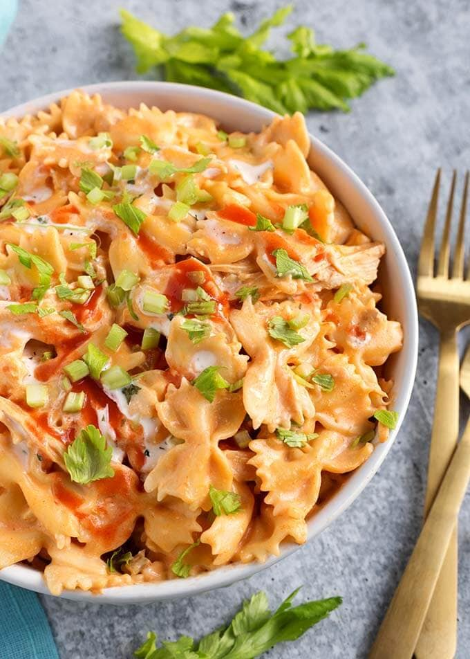

Buffalo Chicken Pasta Recipe

Nutrition info
Prep: 20 mins
Cook: 10 mins
Additional: 1 hr
Total: 1 hr 30 mins
Servings: 12
Yield: 12 Servings
Ingedients
- 1(16 ounce) package uncooked rotini pasta
- 1/2 cup mayonnaise
- 1 cup chunky blue cheese dressing
- 1/2 cup buffalo sauce
- 1 teaspoon salt
- 1/2 teaspoon black pepper
- 1 pound frozen cooked chicken strips, defrosted and diced
- 1/2 cup green bell pepper, diced
- 1/2 cup red bell pepper, diced
- 1 cup red onion, diced
Steps
- Fill a large pot with lightly salted water and bring to a rolling boil over high heat. Once the water is boiling, stir in the rotini, and return to a boil.
- Cook uncovered, stirring ocassionally, until the pasta has cooked through, but is still firm to the bite, about 8 minutes.
- Drain well in a colander set in the sink.
- Stir together the mayonnaise, blue cheese dressing, buffalo wing sauce, salt and pepper in a large bowl.
- Add the chicken, bell peppers, red onion, and cooked pasta and toss to coat with the dressing.
- Cover and chill at least 1 hour in the refrigerator before serving.
Nutrition Facts
Per Serving: 379 calories; protein 13.6g; carbohydrates 34.6g; fat 21.1g; cholesterol 40.2mg; sodium 1051.1mg.